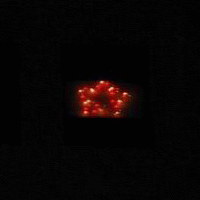
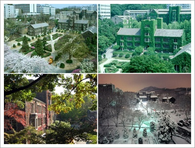
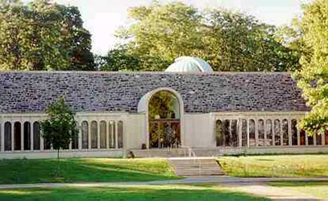
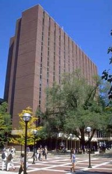
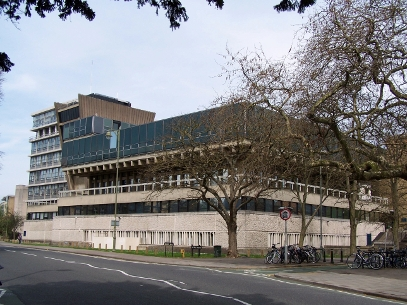
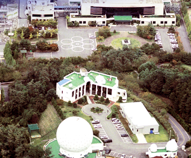
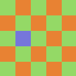

|
|
Korea Astronomy and Space Science Institute 776, Daedeokdae-ro Yuseong-gu Daejeon, Republic of Korea 305-348
https://astromsshin.github.io/ |
Publications | Research | Software | Links | Tech and data blog
학부생 연구: 항상 존재하는 것은 아니지만 학부생들의 경우도 연구 인턴 프로그램이 가능한 경우가 있습니다.
참고로 학부생 연구 인턴을 위해 따로 준비된 연구비가 있지는 않습니다. 그러나 충남대학교 학부생들의
경우 백마인턴십으로 연구비
지원과 함께 연구 인턴십 기회가 매 여름/겨울 방학에 있습니다.
LSST (Large Synoptic Survey Telescope) in KASI
Contact me if you are interested in the above opportunity.
If you're interested in the KASI as a host institute and research collaboration with me
for the following NSF program of the Fulbright open study/research program
for undergraduate students in the US, contact me.
International Research Experiences for Students (IRES)
Fulbright U.S. Student Program in Korea
There are possible opportunities for postdoctoral research in the KASI:
현재 KASI postdoc 연구 주제
East Asian Core Observatory Association Fellowships
+
|
Useful data
1. Multiply imaged lensing systems in CASTLES seen through SDSS : are you interested in images of multiply imaged lensing systems? |

Is it a variable star? It's YSTAR. |
|
Department of Astronomy, Yonsei University, Seoul, Republic of Korea
*** StarDB: Analysis of spatial and temporal variability in astronomical data
|
 Four seasons at Yonsei University, Seoul, Republic of Korea. (I was an undergraduate student at Yonsei.) |
|

Peyton Hall, Princeton University, Princeton, NJ, USA. (Peyton hall is the building of astrophysics department. I was a graduate student at Princeton.) |
Department of Astrophysical Sciences, Princeton University, Princeton, NJ, USA
|
|
|

Dennison building, University of Michigan, Ann Arbor, MI, USA. |
|

Denys Wilkinson building, University of Oxford, Oxford, UK. |
Department of Physics, University of Oxford, Oxford, UK
|
|
Korea Astronomy and Space Science Institute
|

KASI headquarter, Yuseong-gu, Daejeon, Republic of Korea. |
|
I use  |


{kind=link}
{kind=link}
{kind=link}
{kind=link}